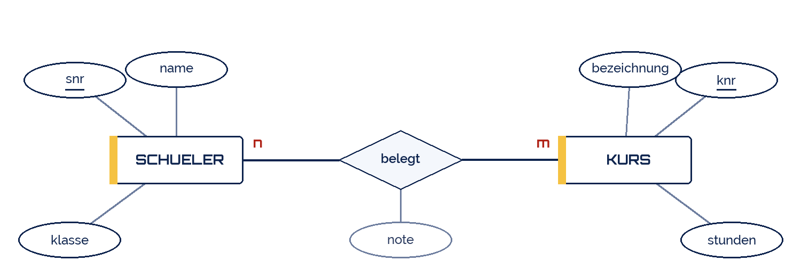

jplenio
jplenio
Good morning!
Nur das Schöne wird die Welt retten!
Fjodor Dostojewski
Nicht verzagen, Doc Alvers fragen!
Informatik — Grundkurs 12
Das Entity-Relationship-Modell
Entitäten, Attribute, Beziehungen — und die Kardinalitäten
Nicht verzagen, Doc Alvers fragen!
Kapitel 01
Drei Bausteine
Entität, Attribut, Beziehung
Nicht verzagen, Doc Alvers fragen!
Die Elemente des ER-Modells
| Element | Form | ist | Beispiel |
|---|---|---|---|
| Entitätstyp | Rechteck | eine Art von Ding | Schueler |
| Attribut | Ellipse | ein Merkmal | name, geburt |
| Schlüsselattribut | unterstrichen | macht eindeutig | snr |
| Beziehungstyp | Raute | Zusammenhang zweier Entitätstypen | belegt |
| Kardinalität | Beschriftung | wie viele zu wie vielen | 1:n, n:m |
Das Modell ist sprach- und systemunabhängig — es beschreibt die Miniwelt, nicht die Tabellen
Erst im nächsten Schritt wird daraus ein Relationenschema
Nicht verzagen, Doc Alvers fragen!
Wie man Entitätstypen findet
Substantive im Anforderungstext markieren
Prüfen: Hat das Ding eigene Merkmale, die man speichern will?
Prüfen: Gibt es davon mehrere Exemplare, die man unterscheiden muss?
Zweimal ja: Entitätstyp. Sonst meist ein Attribut
„Klasse“ kann beides sein — Attribut von Schueler oder eigener Entitätstyp. Der Zweck entscheidet
Nicht verzagen, Doc Alvers fragen!
Kapitel 02
Kardinalitäten
Die wichtigste Entscheidung im Modell
Nicht verzagen, Doc Alvers fragen!
Die drei Grundfälle
| Typ | heißt | Beispiel |
|---|---|---|
| 1:1 | einer zu genau einem | Schüler und Ausweisnummer |
| 1:n | einer zu vielen | eine Klasse hat viele Schüler |
| n:m | viele zu vielen | Schüler belegen Kurse |
Bestimmt wird sie durch zwei Fragen, je Richtung eine
„Ein Schüler belegt wie viele Kurse?“ — viele. „Ein Kurs hat wie viele Schüler?“ — viele
Zweimal „viele“ ergibt n:m — der Fall, der beim Umsetzen eine eigene Tabelle braucht
Nicht verzagen, Doc Alvers fragen!
Der häufigste Fehler bei Kardinalitäten
Beide Fragen in dieselbe Richtung gestellt — dann kommt immer 1:n heraus
Die Frage lautet: Ein Exemplar links steht zu wie vielen rechts? Und umgekehrt
Achtet auf den Zeitbezug: „ein Schüler hat einen Klassenlehrer“ — jetzt, oder je gehabt?
Und auf die Pflicht: muss jeder Kurs belegt sein, oder darf er leer bleiben?
Diese Feinheit heißt Optionalität und wird oft als (min, max) notiert
Nicht verzagen, Doc Alvers fragen!
Ein ER-Diagramm der Schuldatenbank

Schueler und Kurs sind Entitätstypen, belegt ist die Beziehung
Die Kardinalität n:m steht an den Kanten der Raute
Nicht verzagen, Doc Alvers fragen!
Kapitel 03
Modellieren
Vom Text zum Diagramm
Nicht verzagen, Doc Alvers fragen!
Der Weg in fünf Schritten
| Schritt | Ergebnis |
|---|---|
| 1. Text lesen und Substantive markieren | Kandidatenliste |
| 2. Entitätstypen auswählen | Rechtecke |
| 3. Attribute zuordnen, Schlüssel bestimmen | Ellipsen, unterstrichen |
| 4. Beziehungen benennen | Rauten mit Verb |
| 5. Kardinalitäten bestimmen | Beschriftung an den Kanten |
Beziehungen werden mit einem Verb benannt: belegt, unterrichtet, gehört zu
Wenn die Beziehung eigene Merkmale hat (etwa die Note), gehören sie an die Raute
Nicht verzagen, Doc Alvers fragen!
Die Kardinalität bestimmt man mit zwei Fragen — einer je Richtung. Wer nur in eine Richtung fragt, bekommt immer 1:n.
Merksatz
Nicht verzagen, Doc Alvers fragen!
Fun Facts: ER-Modell
Peter Chen veröffentlichte das ER-Modell 1976 am MIT
Sein Aufsatz gehört zu den meistzitierten der ganzen Informatik
Die Chen-Notation mit Rauten ist die klassische — daneben gibt es Krähenfuß und UML
Der Krähenfuß (crow's foot) zeigt die Kardinalität als dreizinkiges Symbol an der Kante
In Werkzeugen sieht man heute meist die UML-Notation mit Zahlen an den Enden
Nicht verzagen, Doc Alvers fragen!
Eure Aufgabe: ein ER-Diagramm entwerfen
Nehmt eine Miniwelt aus eurem Fachbereich — Bibliothek, Verein, Werkstatt, Fuhrpark
Drei bis fünf Entitätstypen mit Attributen und Schlüssel
Mindestens eine 1:n- und eine n:m-Beziehung
Jede Kardinalität mit beiden Fragen begründen — schriftlich
Tauscht mit dem Nachbarpaar: Sind die Kardinalitäten nachvollziehbar?
Nicht verzagen, Doc Alvers fragen!